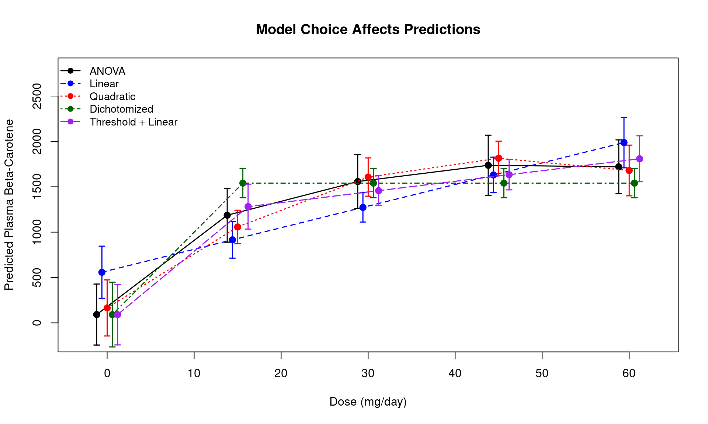
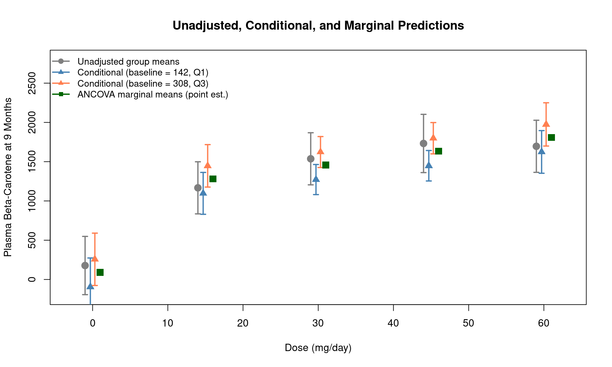
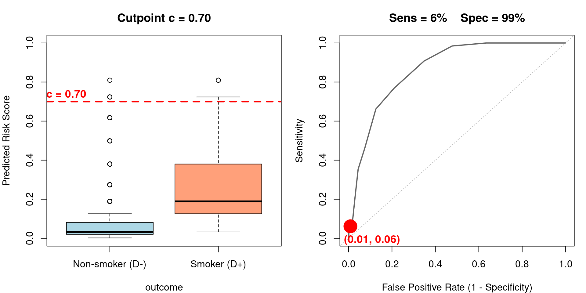
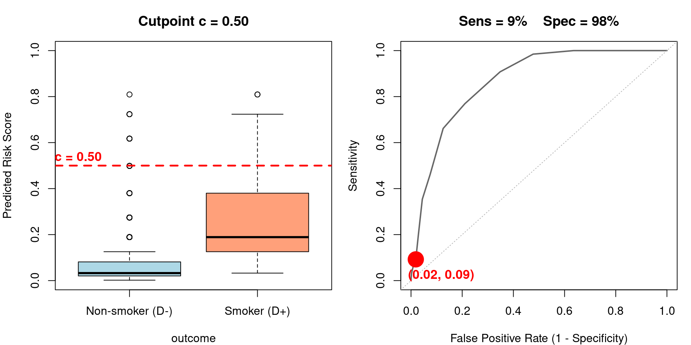
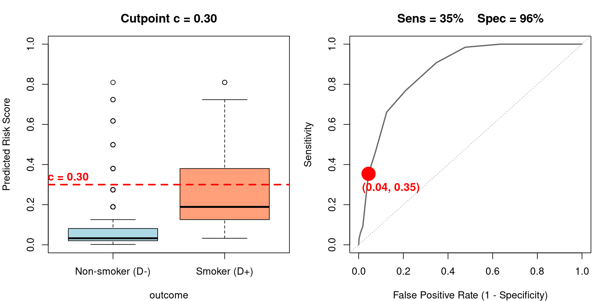
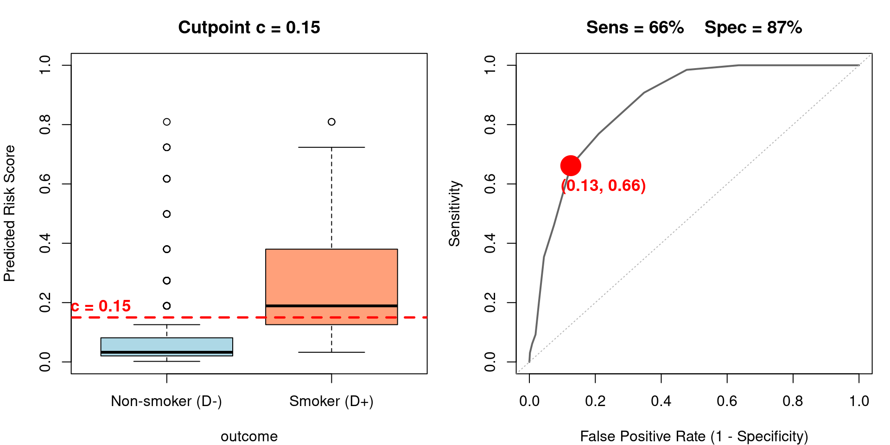
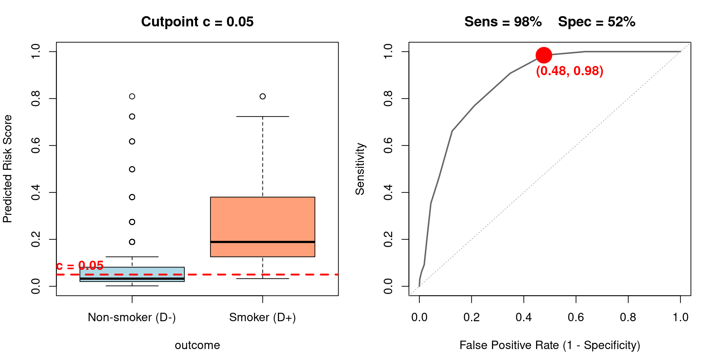
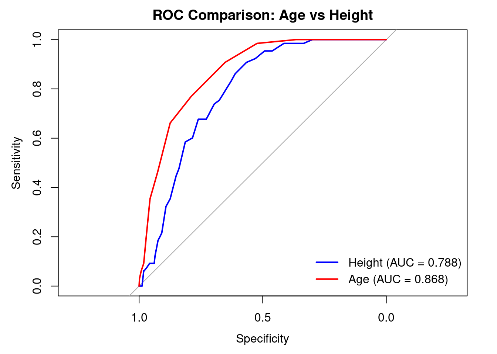
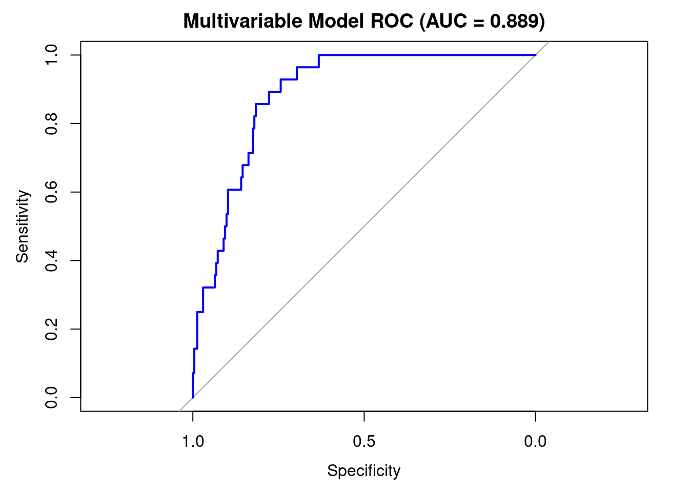
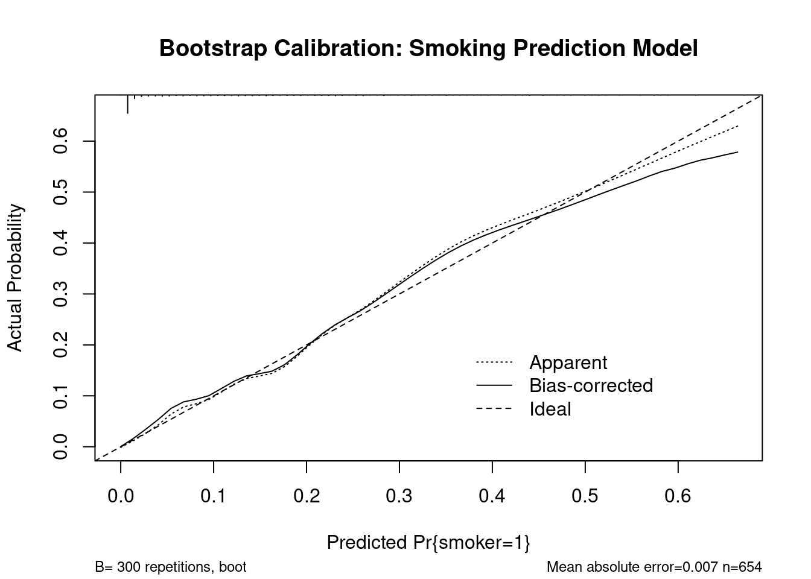

Code
library(rms)
library(ggplot2)
library(kableExtra)
library(pROC)
tryCatch(source('pander_registry.R'), error = function(e) invisible(e))Lecture 13
April 13, 2026
library(rms)
library(ggplot2)
library(kableExtra)
library(pROC)
tryCatch(source('pander_registry.R'), error = function(e) invisible(e))In Lecture 12, we compared different approaches to modeling dose-response relationships (ANOVA, linear, polynomial, threshold models)
The choice of model directly affects the quality of predictions
A model that is too simple (e.g., linear when the truth is nonlinear) will produce biased predictions for some groups
A model that is too complex (e.g., ANOVA with many groups) will produce imprecise predictions
In this lecture, we shift focus from which model to choose to how to use a chosen model for prediction
Prediction of summary measures (means, probabilities) with confidence intervals
Prediction of individual observations with prediction intervals
Classification and discrimination for binary outcomes
Other uses of regression beyond association and prediction
Most of this course focuses on quantifying associations and making inferences
Prediction is the focus of this lecture
But regression-based thinking extends to many other areas, including:
Joint modeling: Simultaneously modeling a longitudinal outcome and a time-to-event outcome
e.g. Modeling repeated PSA measurements and time to cancer recurrence together
Accounts for the dependence between the longitudinal trajectory and the event process
Latent variable and mixture models: Identifying unobserved subgroups or constructs
e.g. Latent class growth models to find distinct trajectories of disease progression
Structural equation models relating observed measurements to latent constructs
Clustering and classification: Dividing populations into subgroups based on patterns of covariates
Regression trees, random forests, and other machine learning approaches
“Small \(n\), large \(p\)” problems (few subjects, many predictors)
Getting valid inference in these settings is particularly challenging and is an area of active research in Biostatistics
Quantifying and comparing distributions
Compare distribution of the outcome variable across levels of the grouping variable or variables
Compare salary in males and females, across professors of the same rank, degree, experience, and field
Compare FEV in smokers and non-smokers, across teenagers of the same age and height
Need to decide which summary measure is appropriate for describing the distribution
Common summary measures: Means, median, geometric mean, odds, rates, hazards
Other measures: Variance, skewness, kurtosis, likelihood of extreme values, quantiles, etc.
May desire estimates within specific subgroups
Estimates of the association within gender, race, or age groups
(This is effect modification)
Regression based prediction
Prediction of summary measures
Point prediction
Interval prediction
Quantify the uncertainty of the average
Range of summary measure that might be reasonable to observe
Prediction of individual measurements
Point prediction
Interval prediction
Quantify the uncertainty of the individual prediction
Range of measurements that might reasonably be observed in a future individual with given covariates
Creatinine is a continuously produced breakdown product in muscles
Removed by the kidney through filtration
Amount of creatinine cleared by the kidneys in 24 hours is a measure of renal function
Gold standard is to collect urine output for 24 hours, measure creatinine
Would prefer to find a combination of blood and urine measures that can be obtained at one time point, yet still provides accurate prediction of a patient’s creatinine clearance
Statistical approach
Collect a training dataset to build a regression model for prediction
Measure true creatinine clearance
Measure age, gender, weight, height, blood markers, urinary markers, etc.
Fit a (data driven?) regression model to predict true creatinine clearance
Collect a validation dataset
Use the regression estimates (the \(\beta\)s) from the training dataset to see how well your model predict creatinine clearance
Quantify the accuracy of the predictive model (e.g. mean squared error)
Cross validation
Want to predict which infants are more likely to be less than 2500 grams at birth
Possible predictors: Age, race, blood biomarkers collected during pregnancy
Statistical Approach
Collect a training dataset to build a regression model for prediction
Measure birth weight
Measure age, race, blood biomarkers
Fit a (data driven?) regression model to predict low birth weight
Collect a validation dataset
Use the regression estimates (the \(\beta\)s) from the training dataset to see how well your model predict low birth weight
Quantify the accuracy of the predictive model
Sensitivity, specificity (ROC curves)
Predictive value positive, predictive value negative
Identify the range of PSA values that would be expected in 95% of most healthy adult males
Possibly stratify by age, race
Statistical Approach
Collect a training dataset to build a regression model for prediction
Measure PSA and variable to predict PSA
Need to estimate the quantiles
Mean plus/minus 2 standard deviations (makes strong Normality assumption)
Estimate the quantiles, provide CIs around the quantiles (likely low precision)
Collect a validation dataset
Necessary assumptions for classical regression (no robust standard errors)
Independence of response measurements within identified clusters
Have appropriately modeled the within group variance (\(\textm{Var}(Y|X)\))
“Approrately modeled” depends on the regression model
Linear regression: Equal variance across groups (\(\textm{Var}(Y|X) = \sigma^2\))
Other regressions: Appropriate mean-variance relationship (e.g. \(\textm{Var}(Y|X) = p*(1-p)\) in logistic regression)
Sample size is large enough so that parameter estimates approximately follow a Normal distribution
Necessary assumptions for associations, including first order trends, using robust standard errors
Independence of response measurements within identified clusters
In linear regression, Robust standard errors accounts for heteroscedasticity in large samples
Sample size is large enough so that parameter estimates approximately follow a Normal distribution
Additional assumptions for predictions of means
Our regression model has accurately described the relationship between summary measures across groups
For continuous covariates, often involves flexible models that allow for departures from linearity
Additional assumptions for predictions of individual observations
Also need to know the shape of the distribution within each group
Methods implemented in software often rely on strong assumptions like Normality
Given age, height, and sex, estimate the mean (or geometric mean) FEV
Given age and PSA, estimate the probability (or odds) of remaining in remission for 24 months
Assumptions are the same as for inference for predictions discussed above, with the key addition that the regression model must accurately describe the relationship across groups
Point estimates obtained by substitution of predictor values into the estimated regression equation
For linear regression: substitute covariate values and compute the fitted value directly
For logistic regression: compute the linear predictor (log-odds), then transform to odds or probability
We demonstrate both below with the FEV data
If assumptions hold, interval estimates can be obtained
We generally find a confidence interval for the transformed quantity, and then back transform to the desired quantity
Statistical criteria for determining the “best” estimate
Consistent: Correct estimate (with infinite sample size)
Precise: Minimum variance among (unbiased) estimators
Common regression methods provide the best estimate in a wide variety of settings
Necessary assumptions
Independence
Variance approximated by the model (relaxed for robust SE)
Regression model accurately describes the relationship among summary measures across groups
Sufficient sample size so that asymptotic Normality of the parameter estimates holds
Interval estimates
When we substitute in the predictor values, it provides an estimate of the model transformation of the summary measure
Model transformation of the summary measure varies by regression setting
Linear regression: Mean
Linear regression on log transformed outcome: Log geometric mean
Logistic regression: Log odds
Poisson regression: Log rate
Formulas for the confidence interval
In general: \(\textrm{(estimate)} \pm \textrm{(crit value)} \times \textrm{(std error)}\)
In linear regression, the \(t\) distribution is usually used to obtain the confidence interval
\(\textrm{(crit value)} = \texttt{qt}(1-\alpha/2, df)\)
Degrees of freedom \(df = n - \textrm{number of predictors in model}\)
In other regressions, we use the standard Normal distribution
Interval estimates in R
After storing a model, the R function predict will compute estimates and standard errors
predict(object, se.fit=FALSE, ...)
object is the stored fitted model
se.fit will provide the standard error of the fit (defaults to FALSE)
See help(predict) for more details and options
fev <- read.csv(file="data/FEV.csv")
fev$logfev <- log(fev$fev)
fev$smoker <- (fev$smoke == "current smoker") + 0m.fev <- lm(logfev ~ height + age, data=fev)
summary(m.fev)Fitting linear model: logfev ~ height + age
| Min | 1Q | Median | 3Q | Max |
|---|---|---|---|---|
| -0.64994 | -0.083102 | 0.010553 | 0.093236 | 0.42156 |
| Estimate | Std. Error | t value | Pr(>|t|) | |
|---|---|---|---|---|
| (Intercept) | -1.971147 | 0.0783322 | -25.1639 | 0e+00 |
| height | 0.043991 | 0.0016473 | 26.7059 | 0e+00 |
| age | 0.019816 | 0.0031805 | 6.2305 | 8e-10 |
| Observations | Residual Std. Error | \(R^2\) | Adjusted \(R^2\) |
|---|---|---|---|
| 654 | 0.14659 | 0.80711 | 0.80652 |
F-statistic: 1361.98 on 2 and 651 DF, pvalue: < 2.22e-16
newdata <- data.frame(age=10, height=66)
pred.fit <- predict(m.fev, newdata=newdata, se.fit=TRUE)
crit <- qt(0.975, df=m.fev$df.residual)
# Geometric mean and CI (back-transform from log scale)
gmfev <- exp(pred.fit$fit)
gm.ci <- exp(pred.fit$fit + c(-1, 1) * crit * pred.fit$se.fit)
data.frame(gmfev = gmfev, gm.lo = gm.ci[1], gm.hi = gm.ci[2]) |>
kable(digits=4, col.names=c("Geometric Mean FEV", "95% CI Lower", "95% CI Upper"),
caption="Predicted geometric mean FEV (age=10, height=66)") |>
kable_styling(bootstrap_options = c("striped", "hover"), full_width=FALSE)| Geometric Mean FEV | 95% CI Lower | 95% CI Upper |
|---|---|---|
| 3.097 | 3.0386 | 3.1566 |
m.smoke <- glm(smoker ~ height + age, data=fev, family=binomial)
summary(m.smoke)| Estimate | Std. Error | z value | Pr(>|z|) | |
|---|---|---|---|---|
| (Intercept) | -10.45429 | 2.351249 | -4.4463 | 8.7375e-06 |
| height | 0.05053 | 0.041056 | 1.2308 | 2.1841e-01 |
| age | 0.43772 | 0.066192 | 6.6129 | 0.0000e+00 |
(Dispersion parameter for binomial family taken to be 1 )
| Null deviance: | 423.45 on 653 degrees of freedom |
| Residual deviance: | 317.06 on 651 degrees of freedom |
AIC: 323.057
Number of Fisher Scoring Iterations: 6
pred.logodds <- predict(m.smoke, newdata=newdata, se.fit=TRUE)
# Odds and CI
odds <- exp(pred.logodds$fit)
odds.ci <- exp(pred.logodds$fit + c(-1, 1) * 1.96 * pred.logodds$se.fit)
# Probability and CI (back-transform from log-odds)
prob <- plogis(pred.logodds$fit)
prob.ci <- plogis(pred.logodds$fit + c(-1, 1) * 1.96 * pred.logodds$se.fit)
data.frame(
Odds = odds, Odds.Lo = odds.ci[1], Odds.Hi = odds.ci[2],
Prob = prob, Prob.Lo = prob.ci[1], Prob.Hi = prob.ci[2]) |>
kable(digits=4,
col.names=c("Odds", "95% CI Lower", "95% CI Upper",
"Probability", "95% CI Lower", "95% CI Upper"),
caption="Predicted odds and probability of smoking (age=10, height=66)") |>
kable_styling(bootstrap_options = c("striped", "hover"), full_width=FALSE)| Odds | 95% CI Lower | 95% CI Upper | Probability | 95% CI Lower | 95% CI Upper |
|---|---|---|---|---|---|
| 0.0644 | 0.0401 | 0.1036 | 0.0605 | 0.0385 | 0.0938 |
Methods are for continuous outcomes
Given age, height, and sex, predict a new subject’s FEV
Predicting individual observations requires stronger assumptions than predicting summary measures
All the assumptions for predicting means, plus:
Variance approximated by the model — NOT relaxed for robust SE
Shape of the distribution must be the same in each group (e.g., Normality)
These assumptions are very strong
Consequently, we do not have many methods that provide robust inference
In general, I prefer methods that make as few assumptions as possible
Robust standard errors will not help in this situation
Proper transformation of outcomes and predictors may be necessary so that underlying assumptions of classical linear regression model hold
Models, estimates, will need to be appropriately penalized for valid inference
Topic of more advanced regression courses (Regression Modeling Strategies)
Precise methods have been developed for
Binary variables (the mean specifies the variances)
Continuous data that follow a Normal distribution
Point estimates are obtained by the same substitution as for summary measures — but the interpretation changes: we are now forecasting a single individual’s value, not a group mean
Interval estimates
Under appropriate assumptions, we can obtain standard errors for such predictions
Standard errors must account for two sources of variability
Variability in estimating the regression parameters (same as in predictions of summary measures)
Variability due to subject
Additional variability about the sample mean; “within group standard deviation”
Estimating this source of variability is where the additional Normality assumption is key
Formulas for the prediction interval
In general: \(\textrm{(prediction)} \pm \textrm{(crit value)} \times \textrm{(std error)}\)
In linear regression, the \(t\) distribution is usually used to obtain the prediction interval
\(\textrm{(crit value)} = \texttt{qt}(1-\alpha/2, df)\)
Degrees of freedom \(df = n - \textrm{number of predictors in model}\)
Interval estimates in R
After storing a model, predict provides estimates and standard errors of the fit
For the standard error of the forecast (individual prediction), we need to include the root mean squared error
Alternatively, use predict(object, newdata, interval="prediction") which computes prediction intervals directly
General comment about software
Software typically implements prediction intervals by assuming Normal data
Carefully investigate and understand how any software or package is making predictions
Be careful that you understand exactly what is going on if you are interested in making predictions
This is the interval prediction case (analogous to establishing normal ranges of PSA from the overview)
Using the same FEV model, compare the confidence interval for the mean with the prediction interval for an individual
# Confidence interval for the mean (summary measure)
ci.mean <- predict(m.fev, newdata=newdata, interval="confidence")
# Prediction interval for an individual observation
pi.indiv <- predict(m.fev, newdata=newdata, interval="prediction")
# Back-transform to FEV scale (geometric mean)
comparison <- data.frame(
Type = c("Summary Measure (CI)", "Individual Prediction (PI)"),
Estimate = exp(c(ci.mean[,"fit"], pi.indiv[,"fit"])),
Lower = exp(c(ci.mean[,"lwr"], pi.indiv[,"lwr"])),
Upper = exp(c(ci.mean[,"upr"], pi.indiv[,"upr"]))
)
kable(comparison, digits=4,
col.names = c("Type", "Geometric Mean FEV", "Lower", "Upper"),
caption="Comparing CI for mean vs prediction interval (age=10, height=66)") |>
kable_styling(bootstrap_options = c("striped", "hover"), full_width=FALSE)| Type | Geometric Mean FEV | Lower | Upper |
|---|---|---|---|
| Summary Measure (CI) | 3.097 | 3.0386 | 3.1566 |
| Individual Prediction (PI) | 3.097 | 2.3209 | 4.1327 |
Point estimates are identical
The prediction interval for individual observations is much wider
As \(n\) increases, the width of the prediction interval (on the log scale) approaches \(\pm 1.96 \times \textrm{RMSE}\)
As \(n\) increases, the width of the interval around the summary measure approaches \(0\)
We can verify the relationship between the standard errors
# Demonstrate: se_pred^2 = se_fit^2 + RMSE^2
pred.fit <- predict(m.fev, newdata=newdata, se.fit=TRUE)
rmse <- summary(m.fev)$sigma
se.fit <- pred.fit$se.fit
se.pred <- sqrt(se.fit^2 + rmse^2)
data.frame(
se.fit = se.fit, se.fit.sq = se.fit^2,
RMSE = rmse, RMSE.sq = rmse^2,
se.pred = se.pred, se.pred.sq = se.pred^2
) |>
kable(digits=7, col.names=c("SE(fit)", "SE(fit)^2", "RMSE", "RMSE^2", "SE(pred)", "SE(pred)^2"),
caption = "Decomposition of prediction standard error") |>
kable_styling(bootstrap_options = c("striped", "hover"), full_width=FALSE)| SE(fit) | SE(fit)^2 | RMSE | RMSE^2 | SE(pred) | SE(pred)^2 |
|---|---|---|---|---|---|
| 0.009702 | 9.41e-05 | 0.1465925 | 0.0214894 | 0.1469132 | 0.0215835 |
\(\textrm{se}_\textrm{pred}^2 = \textrm{se}_\textrm{fit}^2 + \textrm{RMSE}^2\)
In R, predict(..., interval="prediction") handles this calculation automatically
Model: \(Y_i | X_i \sim N(\beta_0 + \beta_1 X_i, \sigma^2)\)
Alternative specification: \(Y_i | X_i = \beta_0 + \beta_1 X_i + \epsilon_i\), where \(\epsilon_i \sim N(0, \sigma^2)\)
Estimated mean: \(\hat{\beta}_0 + \hat{\beta}_1 X_h \sim N\left(\beta_0 + \beta_1 X_h, \sigma^2 V\right)\)
Predicted value of individual observation: \(\hat{\beta}_0 + \hat{\beta}_1 X_h + \epsilon_h \sim N\left(\beta_0 + \beta_1 X_h, \sigma^2 (1 + V)\right)\)
\(V = \frac{1}{n} + \frac{(X_h - \overline{X})^2}{\sum_{i=1}^n (X_i - \overline{X})^2}\)
\(X_h\) is the chosen value of the covariate (e.g. age==10)
Note: As \(n \rightarrow \infty, V \rightarrow 0\)
\[\mathbf{Y} = \mathbf{X} \boldsymbol{\beta} + \boldsymbol{\epsilon}, \quad \boldsymbol{\epsilon} \sim N(\mathbf{0}, \sigma^2 \mathbf{I})\]
where \(\mathbf{Y}\) is the \(n \times 1\) response vector, \(\mathbf{X}\) is the \(n \times (p+1)\) design matrix (including intercept column), and \(\boldsymbol{\beta}\) is the \((p+1) \times 1\) parameter vector
The OLS estimator is \(\hat{\boldsymbol{\beta}} = (\mathbf{X}'\mathbf{X})^{-1}\mathbf{X}'\mathbf{Y}\)
For a new observation with covariate vector \(\mathbf{x}_h\) (a \(1 \times (p+1)\) row vector including a 1 for the intercept):
Confidence interval for the mean response (prediction of summary measure)
\(\hat{y}_h = \mathbf{x}_h \hat{\boldsymbol{\beta}}\)
\(\textrm{Var}(\hat{y}_h) = \sigma^2 \mathbf{x}_h (\mathbf{X}'\mathbf{X})^{-1} \mathbf{x}_h'\)
\(\textrm{se}_\textrm{fit} = \hat{\sigma} \sqrt{\mathbf{x}_h (\mathbf{X}'\mathbf{X})^{-1} \mathbf{x}_h'}\)
CI: \(\hat{y}_h \pm t_{n-p-1, \alpha/2} \times \textrm{se}_\textrm{fit}\)
Prediction interval for a new individual observation
The new observation is \(Y_h = \mathbf{x}_h \boldsymbol{\beta} + \epsilon_h\)
\(\textrm{Var}(\hat{y}_h - Y_h) = \sigma^2 \left(1 + \mathbf{x}_h (\mathbf{X}'\mathbf{X})^{-1} \mathbf{x}_h'\right)\)
\(\textrm{se}_\textrm{pred} = \hat{\sigma} \sqrt{1 + \mathbf{x}_h (\mathbf{X}'\mathbf{X})^{-1} \mathbf{x}_h'}\)
PI: \(\hat{y}_h \pm t_{n-p-1, \alpha/2} \times \textrm{se}_\textrm{pred}\)
Note: \(\textrm{se}_\textrm{pred}^2 = \textrm{se}_\textrm{fit}^2 + \hat{\sigma}^2\), exactly the decomposition we demonstrated earlier
Note: As \(n \rightarrow \infty\), \(\mathbf{x}_h (\mathbf{X}'\mathbf{X})^{-1} \mathbf{x}_h' \rightarrow 0\) and the prediction interval width approaches \(\pm t \times \hat{\sigma}\) (the irreducible within-group variability)
predict()# Design matrix and estimated coefficients from the log(FEV) model
X <- model.matrix(m.fev)
beta.hat <- coef(m.fev)
sigma.hat <- summary(m.fev)$sigma
n <- nrow(X)
p <- ncol(X) - 1 # number of predictors (excluding intercept)
# New observation: age=10, height=66
xh <- matrix(c(1, 66, 10), nrow=1) # [intercept, height, age]
colnames(xh) <- names(beta.hat)# Compute (X'X)^{-1}
XtX.inv <- solve(t(X) %*% X)
# Fitted value
yhat <- as.numeric(xh %*% beta.hat)
# Variance of the fitted value: sigma^2 * xh (X'X)^{-1} xh'
V <- as.numeric(xh %*% XtX.inv %*% t(xh))
se.fit.manual <- sigma.hat * sqrt(V)
# Variance of prediction: sigma^2 * (1 + xh (X'X)^{-1} xh')
se.pred.manual <- sigma.hat * sqrt(1 + V)
# Critical value
crit <- qt(0.975, df = n - p - 1)
# Confidence interval for mean (on log scale)
ci.manual <- yhat + c(-1, 1) * crit * se.fit.manual
# Prediction interval for individual (on log scale)
pi.manual <- yhat + c(-1, 1) * crit * se.pred.manual# Compare to predict() output
pred.ci <- predict(m.fev, newdata=newdata, interval="confidence")
pred.pi <- predict(m.fev, newdata=newdata, interval="prediction")
pred.se <- predict(m.fev, newdata=newdata, se.fit=TRUE)
comparison <- data.frame(
Quantity = c("Fitted value", "SE(fit)", "SE(pred)",
"CI lower", "CI upper", "PI lower", "PI upper"),
`Matrix Algebra` = c(yhat, se.fit.manual, se.pred.manual,
ci.manual[1], ci.manual[2],
pi.manual[1], pi.manual[2]),
`predict()` = c(pred.ci[,"fit"], pred.se$se.fit,
sqrt(pred.se$se.fit^2 + sigma.hat^2),
pred.ci[,"lwr"], pred.ci[,"upr"],
pred.pi[,"lwr"], pred.pi[,"upr"]),
check.names = FALSE
)
kable(comparison, digits=6,
caption = "Verification: matrix algebra vs predict() (log FEV scale, age=10, height=66)") |>
kable_styling(bootstrap_options = c("striped", "hover"), full_width=FALSE)| Quantity | Matrix Algebra | predict() |
|---|---|---|
| Fitted value | 1.130441 | 1.130441 |
| SE(fit) | 0.009702 | 0.009702 |
| SE(pred) | 0.146913 | 0.146913 |
| CI lower | 1.111390 | 1.111390 |
| CI upper | 1.149492 | 1.149492 |
| PI lower | 0.841960 | 0.841960 |
| PI upper | 1.418922 | 1.418922 |
The matrix algebra calculations match predict() exactly
This confirms that predict() is computing \(\mathbf{x}_h (\mathbf{X}'\mathbf{X})^{-1} \mathbf{x}_h'\) internally
Back-transforming to the FEV scale (exponentiating), these correspond to the geometric mean CI and prediction interval we computed earlier
In Lecture 12, we compared several models for the dose-response relationship in the beta carotene trial
Now we examine how model choice affects the predictions themselves, and how adjusting for baseline affects precision
carot <- read.csv("data/carot-nomissing.csv")
carot$trt <- (carot$dose > 0) + 0
dose.levels <- c(0, 15, 30, 45, 60)
newdose <- data.frame(dose = dose.levels, carot0 = mean(carot$carot0),
trt = (dose.levels > 0) + 0)
# Fit the models (all adjusted for baseline)
m.anova <- lm(carot3 ~ factor(dose) + carot0, data = carot)
m.linear <- lm(carot3 ~ dose + carot0, data = carot)
m.quad <- lm(carot3 ~ poly(dose, 2) + carot0, data = carot)
m.dichot <- lm(carot3 ~ trt + carot0, data = carot)
m.thres <- lm(carot3 ~ trt + dose + carot0, data = carot)# Predicted means and CIs from each model
get_preds <- function(model, nd) {
p <- predict(model, newdata = nd, interval = "confidence")
data.frame(dose = nd$dose, fit = p[,"fit"], lwr = p[,"lwr"], upr = p[,"upr"])
}
pred.anova <- get_preds(m.anova, newdose)
pred.linear <- get_preds(m.linear, newdose)
pred.quad <- get_preds(m.quad, newdose)
pred.dichot <- get_preds(m.dichot, newdose)
pred.thres <- get_preds(m.thres, newdose)# Colors and labels for each model
cols <- c("black", "blue", "red", "darkgreen", "purple")
names <- c("ANOVA", "Linear", "Quadratic", "Dichotomized", "Threshold + Linear")
preds <- list(pred.anova, pred.linear, pred.quad, pred.dichot, pred.thres)
offsets <- c(-1.2, -0.6, 0, 0.6, 1.2)
plot(NULL, xlim = c(-3, 63), ylim = c(-200, 2800),
xlab = "Dose (mg/day)", ylab = "Predicted Plasma Beta-Carotene",
main = "Model Choice Affects Predictions")
for(i in 1:5) {
d <- preds[[i]]
x <- d$dose + offsets[i]
arrows(x, d$lwr, x, d$upr, angle = 90, code = 3, length = 0.04,
col = cols[i], lwd = 1.5)
points(x, d$fit, pch = 19, col = cols[i], cex = 1.2)
lines(d$dose + offsets[i], d$fit, col = cols[i], lwd = 1.5, lty = i)
}
legend("topleft", names, col = cols, pch = 19, lwd = 1.5, lty = 1:5,
bty = "n", cex = 0.9)
Key observations:
The ANOVA model fits each dose group independently — widest CIs, but no risk of misspecifying the dose-response shape
The linear model borrows strength across dose groups — narrower CIs, but the predictions are biased if the true relationship is not linear
The more parsimonious models (dichotomized, linear) have narrower CIs at each dose level, but may miss important features of the dose-response
The threshold + linear model captures both the jump from placebo to active and the linear trend among active doses — a good compromise
# Compare CI widths across models at each dose level
ci_widths <- data.frame(
Dose = dose.levels,
ANOVA = pred.anova$upr - pred.anova$lwr,
Linear = pred.linear$upr - pred.linear$lwr,
Quadratic = pred.quad$upr - pred.quad$lwr,
Dichotomized = pred.dichot$upr - pred.dichot$lwr,
`Threshold + Linear` = pred.thres$upr - pred.thres$lwr,
check.names = FALSE
)
kable(ci_widths, digits = 0,
caption = "95% CI width by model and dose level (at mean baseline)") |>
kable_styling(bootstrap_options = c("striped", "hover"), full_width = FALSE)| Dose | ANOVA | Linear | Quadratic | Dichotomized | Threshold + Linear |
|---|---|---|---|---|---|
| 0 | 672 | 574 | 618 | 713 | 668 |
| 15 | 594 | 404 | 369 | 324 | 495 |
| 30 | 594 | 323 | 423 | 324 | 329 |
| 45 | 664 | 392 | 377 | 324 | 334 |
| 60 | 594 | 557 | 559 | 324 | 506 |
In the beta carotene trial, we can form predictions three ways:
Unadjusted group means: The sample mean at each dose level, ignoring baseline entirely (marginal over baseline)
ANCOVA conditional predictions: Predicted 9-month level for a patient at a specific baseline value
ANCOVA marginal means: Predicted 9-month level at each dose, averaged over the observed distribution of baseline values (marginal over baseline, but leveraging the baseline-outcome correlation for precision)
Because this is a randomized trial, baseline should be balanced across dose groups
# Descriptive: baseline beta-carotene by dose group
baseline_by_dose <- aggregate(carot0 ~ dose, data = carot,
FUN = function(x) c(n = length(x), mean = mean(x), sd = sd(x)))
baseline_df <- data.frame(Dose = baseline_by_dose$dose, baseline_by_dose$carot0,
check.names = FALSE)
kable(baseline_df, digits = 1,
col.names = c("Dose", "N", "Mean Baseline", "SD Baseline"),
caption = "Baseline plasma beta-carotene by dose group") |>
kable_styling(bootstrap_options = c("striped", "hover"), full_width = FALSE)| Dose | N | Mean Baseline | SD Baseline |
|---|---|---|---|
| 0 | 8 | 270.2 | 136.3 |
| 15 | 10 | 220.1 | 127.9 |
| 30 | 10 | 219.3 | 83.8 |
| 45 | 8 | 227.0 | 105.5 |
| 60 | 10 | 217.8 | 122.3 |
Baseline means are similar across groups, as expected from randomization
We will use the threshold + linear model from Lecture 12 as our preferred model
# 1. Unadjusted group means
m.unadj <- lm(carot3 ~ factor(dose), data = carot)
pred.unadj <- predict(m.unadj, newdata = data.frame(dose = dose.levels),
se.fit = TRUE)
crit.unadj <- qt(0.975, m.unadj$df.residual)
unadj <- data.frame(
dose = dose.levels,
fit = pred.unadj$fit,
lwr = pred.unadj$fit - crit.unadj * pred.unadj$se.fit,
upr = pred.unadj$fit + crit.unadj * pred.unadj$se.fit,
type = "Unadjusted"
)# 2. ANCOVA conditional predictions at specific baseline values
crit.thres <- qt(0.975, m.thres$df.residual)
# Low baseline (25th percentile) and high baseline (75th percentile)
q25 <- quantile(carot$carot0, 0.25)
q75 <- quantile(carot$carot0, 0.75)
nd.low <- data.frame(dose = dose.levels, carot0 = rep(q25,5),
trt = (dose.levels > 0) + 0)
nd.high <- data.frame(dose = dose.levels, carot0 = rep(q75,5),
trt = (dose.levels > 0) + 0)
pred.low <- predict(m.thres, newdata = nd.low, interval = "confidence")
pred.high <- predict(m.thres, newdata = nd.high, interval = "confidence")
cond.low <- data.frame(dose = dose.levels, pred.low,
type = sprintf("Conditional (baseline = %.0f)", q25),
check.names = FALSE)
cond.high <- data.frame(dose = dose.levels, pred.high,
type = sprintf("Conditional (baseline = %.0f)", q75),
check.names = FALSE)# 3. ANCOVA marginal means: average predictions over observed baseline distribution
# For each dose level, predict for every subject using their actual baseline,
# then average across subjects
marginal <- do.call(rbind, lapply(dose.levels, function(d) {
nd <- data.frame(dose = d, carot0 = carot$carot0,
trt = (d > 0) + 0)
preds <- predict(m.thres, newdata = nd)
data.frame(dose = d, fit = mean(preds))
}))
marginal$type <- "ANCOVA Marginal"plot(NULL, xlim = c(-3, 63), ylim = c(-200, 2800),
xlab = "Dose (mg/day)", ylab = "Plasma Beta-Carotene at 9 Months",
main = "Unadjusted, Conditional, and Marginal Predictions")
# Unadjusted
arrows(unadj$dose - 1, unadj$lwr, unadj$dose - 1, unadj$upr,
angle = 90, code = 3, length = 0.04, col = "gray50", lwd = 2)
points(unadj$dose - 1, unadj$fit, pch = 19, col = "gray50", cex = 1.5)
# Conditional: low baseline
arrows(cond.low$dose - 0.3, cond.low$lwr, cond.low$dose - 0.3, cond.low$upr,
angle = 90, code = 3, length = 0.04, col = "steelblue", lwd = 2)
points(cond.low$dose - 0.3, cond.low$fit, pch = 17, col = "steelblue", cex = 1.3)
# Conditional: high baseline
arrows(cond.high$dose + 0.3, cond.high$lwr, cond.high$dose + 0.3, cond.high$upr,
angle = 90, code = 3, length = 0.04, col = "coral", lwd = 2)
points(cond.high$dose + 0.3, cond.high$fit, pch = 17, col = "coral", cex = 1.3)
# Marginal (point estimates only — CIs require bootstrap, covered later)
points(marginal$dose + 1, marginal$fit, pch = 15, col = "darkgreen", cex = 1.5)
legend("topleft",
c("Unadjusted group means",
sprintf("Conditional (baseline = %.0f, Q1)", q25),
sprintf("Conditional (baseline = %.0f, Q3)", q75),
"ANCOVA marginal means (point est.)"),
col = c("gray50", "steelblue", "coral", "darkgreen"),
pch = c(19, 17, 17, 15), lwd = 2, bty = "n", cex = 0.9)
Key observations:
The unadjusted means and ANCOVA marginal means estimate the same quantity — the population-average plasma level at each dose — and are very similar because randomization balanced baseline across groups
The conditional predictions shift vertically depending on the baseline value: patients with higher baseline beta-carotene have higher predicted 9-month levels
The conditional predictions at any specific baseline value have narrower CIs than the unadjusted means. This is the precision gain from ANCOVA
The precision gain from ANCOVA depends on the correlation between baseline and 9-month plasma levels (\(\rho\))
Recall from Lecture 12: the variance of the ANCOVA estimator is proportional to \(\sigma^2(1 - \rho^2)/n\), compared to \(\sigma^2/n\) for the unadjusted estimator
Stronger baseline-outcome correlation means greater precision gain from adjustment
rho <- cor(carot$carot0, carot$carot3)
sprintf("Correlation between baseline and 9-month plasma levels: %.3f", rho)[1] "Correlation between baseline and 9-month plasma levels: 0.193"sprintf("Theoretical variance reduction factor: 1 - rho^2 = %.3f", 1 - rho^2)[1] "Theoretical variance reduction factor: 1 - rho^2 = 0.963"Sometimes the scientific question is one of deriving a rule to classify subjects
Diagnosis of prostate cancer: Based on age, race, and PSA, should we make a diagnosis of prostate cancer?
Prognosis of patients with primary biliary cirrhosis: Based on age, bilirubin, albumin, edema, protime, is the patient likely to die within the next year?
Classification can be regarded as trying to predict the value of a binary variable
Earlier, we were estimating the probability and odds of relapse within a particular group (a summary measure)
Now we want to decide whether a particular individual will relapse or not (an individual measure)
There is an obvious connection between the above two ideas
The probability or odds tells us everything about the distribution of values
The only possible values are 0 or 1
Typical approach
First, use regression model to estimate the probability of event in each group
Second, form a decision rule based on estimated probability of event
If estimate \(\geq c\) (or \(\leq c\)), predict outcome is 1
If estimate \(< c\) (or \(> c\)), predict outcome is 0
Quantify the accuracy of the decision rule
For disease \(D\) and test \(T\)
Sensitivity: \(\textrm{Pr}(T^+ | D^+)\)
Specificity: \(\textrm{Pr}(T^- | D^-)\)
Predicted Value Positive: \(\textrm{Pr}(D^+ | T^+)\)
Predicted Value Negative: \(\textrm{Pr}(D^- | T^-)\)
Receiver operating characteristic (ROC) curves plot the sensitivity against the false positive rate (e.g. 1 - specificity)
Ideal tests will have both high sensitivity and high specificity (low false positives)
Graphically depicted as points in the upper left portion of the plot
1:1 line represents a test that is no better than the flip of a coin
Test usually involves the classification of some binary outcome by a continuous predictor (or set of continuous predictors)
When the continuous predictor is above some point \(c\), the test is said to be positive
ROC curves plots the sensitivity and false positive rate for all possible values of \(c\)
Major drawbacks to ROC analysis
Tempts analyst to find a cutoff point (\(c\)) when none really exists
Better to treat your covariate or linear prediction as a continuous variable
To build intuition about the ROC curve, consider the relationship between a cutpoint on the risk score and the corresponding point on the ROC curve
Left panel: Box plots of predicted risk scores, stratified by the actual binary outcome. A horizontal line shows the current cutpoint \(c\)
Right panel: The ROC curve, with the point corresponding to that cutpoint highlighted
As we lower the cutpoint, we classify more subjects as positive — sensitivity increases, but so does the false positive rate
# Use the age-based smoking model for this demonstration
m.demo <- glm(smoker ~ age, data=fev, family=binomial)
fev$risk.score <- predict(m.demo, type="response")
# Compute the full ROC curve
roc.demo <- roc(fev$smoker, fev$risk.score, quiet=TRUE)
# Helper function for paired cutpoint display
plot_cutpoint <- function(cp, risk.score, outcome, roc.obj) {
pred.pos <- risk.score >= cp
sens <- sum(pred.pos & outcome == 1) / sum(outcome == 1)
spec <- sum(!pred.pos & outcome == 0) / sum(outcome == 0)
fpr <- 1 - spec
par(mfrow=c(1, 2), mar=c(4, 4, 3, 1))
# Left panel: Box plots with cutpoint line
boxplot(risk.score ~ outcome, horizontal=FALSE,
names=c("Non-smoker (D-)", "Smoker (D+)"),
ylab="Predicted Risk Score", col=c("lightblue","lightsalmon"),
main=sprintf("Cutpoint c = %.2f", cp), ylim=c(0,1))
abline(h=cp, col="red", lwd=2.5, lty=2)
text(0.6, cp + 0.04, sprintf("c = %.2f", cp), col="red", cex=1.1, font=2)
# Right panel: ROC curve with highlighted point
plot(1 - roc.obj$specificities, roc.obj$sensitivities,
type="l", lwd=2, col="gray40",
xlab="False Positive Rate (1 - Specificity)",
ylab="Sensitivity",
main=sprintf("Sens = %.0f%% Spec = %.0f%%", 100*sens, 100*spec),
xlim=c(0,1), ylim=c(0,1))
abline(0, 1, col="gray70", lty=3)
points(fpr, sens, col="red", pch=19, cex=3)
text(fpr + 0.10, sens - 0.07,
sprintf("(%.2f, %.2f)", fpr, sens), col="red", cex=1.1, font=2)
}plot_cutpoint(0.70, fev$risk.score, fev$smoker, roc.demo)
Very high cutpoint: almost no one is classified positive. High specificity, very low sensitivity.
plot_cutpoint(0.50, fev$risk.score, fev$smoker, roc.demo)
Still a high cutpoint for this dataset. Starting to capture some true positives.
plot_cutpoint(0.30, fev$risk.score, fev$smoker, roc.demo)
A moderate cutpoint. Sensitivity is improving but false positives are increasing.
plot_cutpoint(0.15, fev$risk.score, fev$smoker, roc.demo)
A lower cutpoint. Capturing most true positives, but at the cost of more false positives.
plot_cutpoint(0.05, fev$risk.score, fev$smoker, roc.demo)
Very low cutpoint: nearly everyone is classified positive. High sensitivity, very low specificity.
Key observations:
A high cutpoint (e.g., \(c = 0.70\)) classifies very few subjects as positive — high specificity but low sensitivity
A low cutpoint (e.g., \(c = 0.05\)) classifies almost everyone as positive — high sensitivity but low specificity
The ROC curve traces out all possible trade-offs between sensitivity and specificity as \(c\) varies
A perfect classifier would have the box plots completely separated with no overlap
Question: Is age or height a better predictor of smoking status?
Will compare the ROC curves
Often summarized using the area under the curve (AUC), also called the C-statistic
A null model (not predictive of outcome) will have AUC of 0.50
Maximum AUC is 1.0
# Fit two models: height alone vs age alone
m.height <- glm(smoker ~ height, data=fev, family=binomial)
m.age <- glm(smoker ~ age, data=fev, family=binomial)
# Compute ROC curves
roc.height <- roc(fev$smoker, predict(m.height, type="response"), quiet=TRUE)
roc.age <- roc(fev$smoker, predict(m.age, type="response"), quiet=TRUE)plot(roc.height, col="blue", lwd=2, main="ROC Comparison: Age vs Height")
plot(roc.age, col="red", lwd=2, add=TRUE)
legend("bottomright",
legend=c(sprintf("Height (AUC = %.3f)", auc(roc.height)),
sprintf("Age (AUC = %.3f)", auc(roc.age))),
col=c("blue", "red"), lwd=2, bty="n")
Age has a visibly higher AUC than height
For any given false positive rate, the sensitivity is higher for age
You may encounter formal hypothesis tests comparing two AUC values (e.g., DeLong test via roc.test() in pROC)
However, these tests have serious problems and should generally be avoided
The C-statistic is an insensitive measure of predictive accuracy — large improvements in a model can produce tiny changes in C
Comparing two C-statistics is even less informative — differences are often clinically meaningless even when statistically significant
With large sample sizes, trivially small differences become “significant”
The test tells you nothing about where the model improves or for whom
Frank Harrell has written extensively about this (see Regression Modeling Strategies):
“It is a bad idea to use a test comparing two C-statistics to decide if one model is better than another.”
The C-statistic is useful as a descriptive measure of a single model’s discriminative ability, not as a basis for model comparison
Better approaches for comparing models:
Likelihood ratio tests (for nested models)
AIC/BIC for comparing model fit
Calibration assessment (does the model get the probabilities right?)
Net reclassification improvement (NRI) if you must compare at specific thresholds — though this has its own issues
Will consider age, height, sex, and FEV as predictors of smoking using an inefficient split-sample approach using training and validation datasets
Fit a multivariable logistic regression model using these covariates in a training sample
Training sample will contain 60% of the observations in the current study
Develop a model on the training sample, see how well it fits in the validation sample (the remaining 40% of the data)
Consider a rule that predicts a subject will smoke if their predicted probability is greater than 0.5
Could choose other cutoffs than 0.5 (I am using 0.5 for brevity)
Other cutoffs will be represented on the ROC curves
Sensitivity, specificity will vary by the cutoff chosen
# Create training/validation split (60/40)
set.seed(42)
fev$sex.factor <- factor(fev$sex)
n <- nrow(fev)
train.idx <- sample(1:n, size=floor(0.6 * n))
fev$training <- FALSE
fev$training[train.idx] <- TRUE
# Fit multivariable model on training data
m.multi <- glm(smoker ~ age + height + sex.factor + fev, data=fev,
subset=training, family=binomial)
summary(m.multi)| Estimate | Std. Error | z value | Pr(>|z|) | |
|---|---|---|---|---|
| (Intercept) | -17.88322 | 4.458224 | -4.0113 | 6.0388e-05 |
| age | 0.39553 | 0.088044 | 4.4924 | 7.0424e-06 |
| height | 0.19739 | 0.081203 | 2.4308 | 1.5064e-02 |
| sex.factormale | -0.67729 | 0.480709 | -1.4089 | 1.5885e-01 |
| fev | -0.43549 | 0.395536 | -1.1010 | 2.7089e-01 |
(Dispersion parameter for binomial family taken to be 1 )
| Null deviance: | 245.06 on 391 degrees of freedom |
| Residual deviance: | 177.72 on 387 degrees of freedom |
AIC: 187.716
Number of Fisher Scoring Iterations: 7
# Predict on validation data
fev$pfit <- predict(m.multi, newdata=fev, type="response")
val <- fev[!fev$training, ]
# Classification table using cutoff of 0.50
val$predicted <- ifelse(val$pfit >= 0.5, 1, 0)
tab <- table(Observed=val$smoker, Predicted=val$predicted)
tab| 0 | 1 | |
|---|---|---|
| 0 | 231 | 3 |
| 1 | 24 | 4 |
# Compute sensitivity, specificity, PVP, PVN
sens <- tab["1","1"] / sum(tab["1",])
spec <- tab["0","0"] / sum(tab["0",])
pvp <- tab["1","1"] / sum(tab[,"1"])
pvn <- tab["0","0"] / sum(tab[,"0"])
metrics <- data.frame(
Metric = c("Sensitivity", "Specificity", "PVP", "PVN"),
Value = c(sens, spec, pvp, pvn),
Percent = sprintf("%.1f%%", 100 * c(sens, spec, pvp, pvn))
)
kable(metrics, digits=3,
caption="Classification performance at cutoff = 0.50 (validation sample)") |>
kable_styling(bootstrap_options = c("striped", "hover"), full_width=FALSE)| Metric | Value | Percent |
|---|---|---|
| Sensitivity | 0.143 | 14.3% |
| Specificity | 0.987 | 98.7% |
| PVP | 0.571 | 57.1% |
| PVN | 0.906 | 90.6% |
Thresholds other than 0.50 give different values for sensitivity, specificity, PVP, PVN
roc.multi <- roc(val$smoker, val$pfit, quiet=TRUE)
plot(roc.multi, col="blue", lwd=2,
main=sprintf("Multivariable Model ROC (AUC = %.3f)", auc(roc.multi)))
Reference
Harrell FE Jr, Lee KL, Mark DB. Multivariable prognostic models: issues in developing models, evaluating assumptions and adequacy, and measuring and reducing errors. Statistics in Medicine. 15(4): 361-87, Feb 1996
A “Tutorial in Biostatistics” (frequently appears in Statistics in Medicine)
From abstract of paper
“Multivariable regression models are powerful tools that are frequently used in clinical outcomes… however uncritical application of modeling techniques can result in models that poorly fit the dataset at hand, or, even more likely, inaccurately predict outcomes on new subjects.”
“… predictive accuracy should be unbiasedly validated using bootstrapping or cross-validation before using predictions in new data series.”
Common problem: Number of predictors being considered (\(p\)) is larger than the number of events (\(m\))
Recommendation: Consider no more than \(m/10\) potential predictors in a model
e.g. if event rate is \(10\%\) and \(n=200\) then \(m=20\); only \(2\) potential predictors
It is inefficient to separate data into training and validation sets
Would be better to train on the whole dataset and still obtain unbiased estimates of what the estiamtes would be in another dataset
Idea: Use bootstrap samples to estimate optimism in training dataset
Step 1: Consider your dataset
Missing data (imputation?)
Interactions (scientific relevance?)
Transformation of predictors (scientific relevance?)
Step 2: Data Reduction
Reduce the number of predictors to a manageable amount
Utilize methods that do not consider the outcome (“unsupervised” learning)
If you do not use the outcome at this stage, your statistical inference is preserved
Correlations among predictors: Variable clustering, principal components analysis
Scientifically meaningful summary measures
Old method for considering a large number of covariates that might possibly be predictive of an outcome
Available in all software as an automated tool, but should not be used
Avoid recreating the stepwise approach when building your own models manually
Major caveats
Overfits your dataset
P-values are not true p-values; they are very anti-conservative
You will often obtain different models if you use “forward” or “backward” stepwise regression
Ignores confounding effects (a variable could be an important confounder, but itself not be statistically significant in the model)
Without clustering certain predictors, may throw out covariates to make non-sensical model
Suppose race/ethnicity is coded as White, Black, Hispanic, Other
Want to model as 3 dummy variables
Stepwise may throw out one of your dummy variables, keep the rest
Pairwise significance would also be highly dependent on reference group chosen by analyst
Two flavors of stepwise model building
Start with no covariates: “Forward” stepwise regression
Start with all covariates: “Backward” stepwise regression
Stepwise procedure proceeds by adding or removing covariates from the model based on the corresponding partial \(t\) or \(Z\) test
Must pre-specify a “P to enter” and “P to remove”
To avoid infinite loops, P to enter must be less than P to remove
E.g. Add a variable to the model if \(p < 0.05\), but only remove a variable from the model if \(p > 0.10\)
Repeat the process until you arrive at a final model
Step 3: Fit the model and …
Evaluate modeling assumptions: Linearity, additivity, distributional assumptions
Use backwards stepwise selection to find a simpler model
Will use all data to fit model
Step 4: Evaluate model
Bootstrap cross-validation
Sample data with replacement
For each bootstrap sample, the evaluation of modeling assumptions and backwards selection will be performed (these steps use the outcome)
Summarize predictive accuracy using a statistic (C-index, Brier score)
Bootstrap cross-validation provides a nearly unbiased estimate of predictive accuracy (e.g. C-index, Brier score) while allowing the entire model to be used for model development
C-index: Area under the ROC curve. Index near 1 indicates higher accuracy.
Brier score: Average squared deviation between predicted probability of event and observed outcome. A lower score represents higher accuracy.
We will apply the Harrell framework to the FEV/smoking data we have been using throughout this lecture
Step 1: Consider the dataset
Outcome: smoking status (binary)
Available predictors: age, height, sex, FEV
How many predictors can we afford?
# Number of events (smokers) determines model complexity budget
n.events <- sum(fev$smoker)
n.total <- nrow(fev)
data.frame(
`Total N` = n.total,
`N smokers (events)` = n.events,
`Event rate` = sprintf("%.1f%%", 100 * n.events / n.total),
`Max predictors (m/10)` = floor(n.events / 10),
check.names = FALSE
) |>
kable(caption = "Sample size considerations for model complexity") |>
kable_styling(bootstrap_options = c("striped", "hover"), full_width = FALSE)| Total N | N smokers (events) | Event rate | Max predictors (m/10) |
|---|---|---|---|
| 654 | 65 | 9.9% | 6 |
Step 2: Data reduction — With only 4 candidate predictors and a reasonable number of events, we can include all predictors without formal data reduction
We will allow age and height to have nonlinear effects using restricted cubic splines (2 d.f. each), sex (1 d.f.), and untransformed FEV (1 d.f.)
Limit is on the total degrees of freedom used for all predictors (that is, we specify a model with at most 6 d.f.)
Step 3: Fit the model using lrm() from the rms package
lrm() provides richer output than glm(): discrimination indexes (C-statistic), likelihood ratio tests, and integration with validate() and calibrate()dd <- datadist(fev)
options(datadist = "dd")
f <- lrm(smoker ~ sex + rcs(age, 3) + rcs(height, 3) + fev,
data = fev, x = TRUE, y = TRUE)# 4/7/26: Print output without using html for now; there is a (temporary?) bug with html printing
print(f)Logistic Regression Model
lrm(formula = smoker ~ sex + rcs(age, 3) + rcs(height, 3) + fev,
data = fev, x = TRUE, y = TRUE)
Model Likelihood Discrimination Rank Discrim.
Ratio Test Indexes Indexes
Obs 654 LR chi2 131.40 R2 0.382 C 0.886
0 589 d.f. 6 R2(6,654)0.174 Dxy 0.771
1 65 Pr(> chi2) <0.0001 R2(6,175.6)0.510 gamma 0.771
max |deriv| 8e-06 Brier 0.069 tau-a 0.138
Coef S.E. Wald Z Pr(>|Z|)
Intercept -47.3537 21.8300 -2.17 0.0301
sex=male -0.8950 0.3986 -2.25 0.0248
age 1.6597 0.6756 2.46 0.0140
age' -0.9169 0.4858 -1.89 0.0591
height 0.5007 0.3717 1.35 0.1779
height' -0.2393 0.2609 -0.92 0.3590
fev -0.5171 0.3117 -1.66 0.0972 The model summary from lrm() provides several useful quantities
C-statistic: A measure of discrimination (0.5 = coin flip, 1.0 = perfect). Probability that a randomly selected case (smoker) has a higher risk score than a randomly selected control (non-smoker)
Brier score: Average squared deviation between predicted probability and observed outcome (lower is better). The Brier score is a proper scoring rule (the C-statistic is not)
\(R^2\): Nagelkerke \(R^2\), a pseudo-\(R^2\) measure
We can visualize the ANOVA-like decomposition of the model
anova(f)| Chi-Square | d.f. | P | |
|---|---|---|---|
| sex | 5.0410 | 1 | 2.4754e-02 |
| age | 31.7746 | 2 | 1.2600e-07 |
| Nonlinear | 3.5616 | 1 | 5.9131e-02 |
| height | 6.6905 | 2 | 3.5252e-02 |
| Nonlinear | 0.8414 | 1 | 3.5900e-01 |
| fev | 2.7516 | 1 | 9.7160e-02 |
| TOTAL NONLINEAR | 5.2657 | 2 | 7.1872e-02 |
| TOTAL | 52.4739 | 6 | 1.5000e-09 |
Step 4: Evaluate the model using bootstrap validation
We fit the model using all the data (no train/test split)
Bootstrap cross-validation provides a nearly unbiased estimate of how well the model will perform on new data
The optimism column reveals how much we are overfitting
v <- validate(f, B=300)
v index.orig training test optimism index.corrected n
Dxy 0.7712 0.7812 0.7611 0.0201 0.7511 300
R2 0.3819 0.3996 0.3687 0.0309 0.3510 300
Intercept 0.0000 0.0000 -0.1115 0.1115 -0.1115 300
Slope 1.0000 1.0000 0.9035 0.0965 0.9035 300
Emax 0.0000 0.0000 0.0430 0.0430 0.0430 300
D 0.1994 0.2099 0.1917 0.0182 0.1812 300
U -0.0031 -0.0031 0.0022 -0.0053 0.0022 300
Q 0.2024 0.2130 0.1895 0.0235 0.1789 300
B 0.0690 0.0671 0.0706 -0.0034 0.0725 300
g 4.5723 5.1860 4.5140 0.6719 3.9003 300
gp 0.1371 0.1390 0.1349 0.0041 0.1330 300validate() output:val.guide <- data.frame(
Index = c("Dxy", "R2", "Slope", "B"),
Description = c(
"Somers' Dxy rank correlation (C = 0.5 + Dxy/2)",
"Nagelkerke R-squared",
"Calibration slope (1.0 = perfectly calibrated)",
"Brier score (lower is better)"
),
`Original` = c("Apparent performance on full data",
"Apparent performance on full data",
"Always 1.0 on training data",
"Apparent Brier score"),
`Corrected` = c("Honest estimate after removing optimism",
"Honest estimate after removing optimism",
"Degree of overfitting (< 1 means overfit)",
"Honest Brier score"),
check.names = FALSE
)
kable(val.guide, caption="Guide to key validate() output") |>
kable_styling(bootstrap_options = c("striped", "hover"), full_width=FALSE)| Index | Description | Original | Corrected |
|---|---|---|---|
| Dxy | Somers' Dxy rank correlation (C = 0.5 + Dxy/2) | Apparent performance on full data | Honest estimate after removing optimism |
| R2 | Nagelkerke R-squared | Apparent performance on full data | Honest estimate after removing optimism |
| Slope | Calibration slope (1.0 = perfectly calibrated) | Always 1.0 on training data | Degree of overfitting (< 1 means overfit) |
| B | Brier score (lower is better) | Apparent Brier score | Honest Brier score |
The optimism column is the difference between training and test performance across bootstrap samples
Large optimism indicates the model is overfitting the data
The index.corrected = index.orig \(-\) optimism gives the honest estimate
Calibration: Does the model get the probabilities right?
cal <- calibrate(f, B=300)
plot(cal, main="Bootstrap Calibration: Smoking Prediction Model")
n=654 Mean absolute error=0.007 Mean squared error=0.00012
0.9 Quantile of absolute error=0.018The calibration plot shows predicted probability (x-axis) versus observed event rate (y-axis)
A well-calibrated model follows the 45-degree line
The gray region shows the confidence band from bootstrap resampling
Departures from the line indicate systematic over- or under-prediction at certain risk levels
Summary: Discrimination tells you whether the model can rank patients correctly; calibration tells you whether the predicted probabilities are accurate. A model can have good discrimination but poor calibration (or vice versa). Both matter for clinical use.
The choice of model (Lecture 12) directly affects the quality of predictions. There is a tradeoff of bias from oversimplification vs. imprecision from overparameterization (everything in statistics is a variance-bias tradeoff)
Prediction of summary measures (means, probabilities):
Confidence intervals quantify uncertainty about the population quantity
For multivariable models, the matrix expression \(\text{se}_{\text{fit}}^2 = x_h (X'X)^{-1} x_h' \cdot \text{MSE}\) makes the dependence on the design explicit
Prediction of individual observations:
Prediction intervals are always wider: \(\text{se}_{\text{pred}}^2 = \text{se}_{\text{fit}}^2 + \text{MSE}\)
The irreducible error (\(\text{MSE}\)) dominates in most practical settings
Classification and discrimination for binary outcomes:
The ROC curve and C-statistic summarize a model’s ability to rank subjects by risk
Formal comparison of C-statistics across models is problematic; focus on whether discrimination is adequate for the clinical purpose
ANCOVA predictions can be conditional (at specific covariate values) or marginal (averaged over the observed distribution)
Model validation (discrimination + calibration via bootstrapping) is essential before deploying predictions clinically